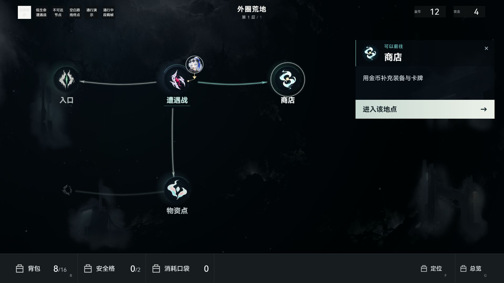
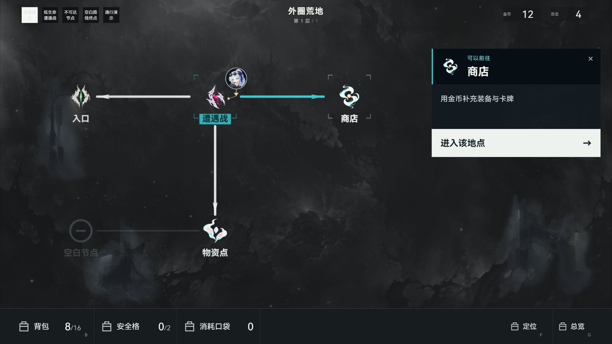
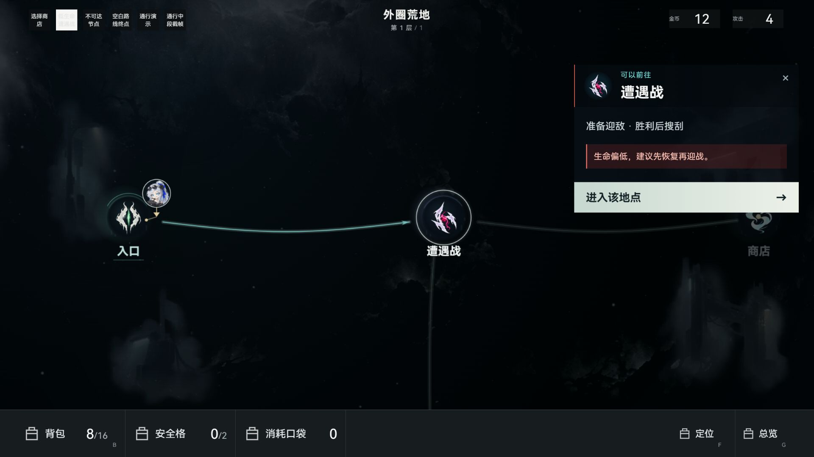
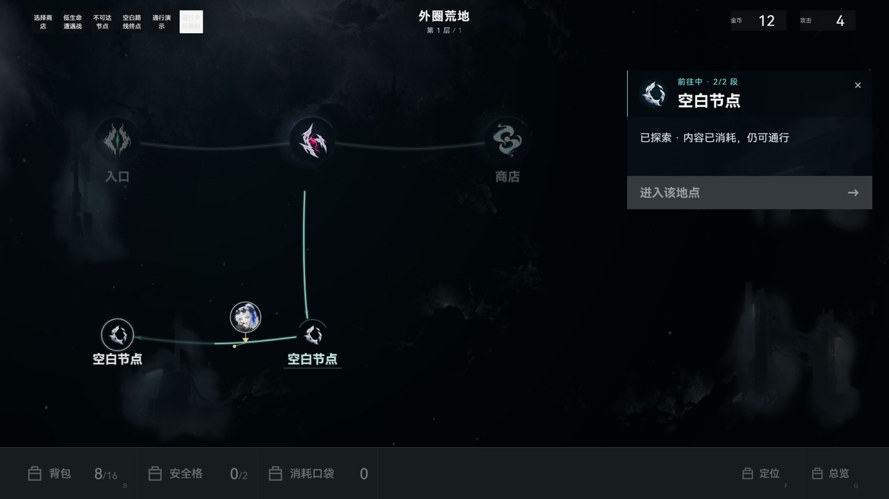

IS7地图整体整改对照
参考图保留原字节。本作截图均为1920×1080内置浏览器独立构造页，真实加载现行地图代码、手绘图源与样式；五节点、上方测试控件与底栏替代图标不属于正式对局。上轮与本轮用同一商店选中场景比较；此板不证明完整对局、存档或性能验收。
 IS7原图：低亮环境与有机路线托住象征性主体，暗圆、局部色光、选中白环、定位标记各有层级。
IS7原图：低亮环境与有机路线托住象征性主体，暗圆、局部色光、选中白环、定位标记各有层级。
本轮：冷暗冬境背景、小暗圆承托与单侧光、白选中环和原头像位置指示；名称去实心条，曲线降低亮度，右侧详情更轻。

上一轮交付截图：背景较灰、主体直接悬浮、粗亮直路与角框，详情实心板。源在本轮接手前另有14:03细路/较亮背景增量，已保留现场并基于该现场改；不把此图作为性能基线。同场景本轮最终图：保持图源、坐标与决策不变，修改承托/光层、路径材质、标签与详情留白。最后调整路线端点，避开名称与当前下划线。

低生命风险：危险提示和主动作仍清楚，远端降权，地图保持连续；正文根据真实构造hp比例生成。
第二段中点为构造状态：细线逐段点亮，头像与正反一致的共享曲线同位置；移动期间工具/进入按钮禁用。真实事务、中断与稳定保存由定向测试覆盖。
本轮变更与验证边界 · 交付指纹 · 此前找回的原参考与空白重画